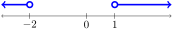
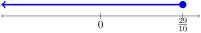

The skills in this section will help us answer questions such as the following:
A professional moving company will charge a one-time fee of \(\$49\) plus \(\$19\) per box for a move. How many boxes can be moved with a budget of \(\$850\text{?}\)
A car rental company charges \(\$39\) per day plus a flat fee of \(\$99\text{.}\) How many days of car rental can be afforded with a budget of \(\$500\text{?}\)
SubsectionInequalities, the number line, and interval notation
Inequalities are mathematical statements that compare two expressions, stating that one expression is less than another, greater than another, less than or equal to another, or greater than or equal to another.
The symbol \(<\) means "less than". For example, \(3 < 5\) means that \(3\) is less than \(5\text{.}\) On a number line, \(3\) is to the left of \(5\text{.}\)
The symbol \(>\) means "greater than". For example, \(5 > 3\) means that \(5\) is greater than \(3\text{.}\) On a number line, \(5\) is to the right of \(3\text{.}\)
Note that writing \(3 < 5\) says the same information as writing \(5 > 3\text{.}\) We also have the symbols \(\leq\) and \(\geq\text{,}\) which mean "less than or equal to" and "greater than or equal to", respectively.
The symbol \(\leq\) means "less than or equal to". For example, \(3 \leq 5\) means that \(3\) is less than or equal to \(5\text{.}\) Because this symbol includes the phrase "or equal to", it is valid to write \(3 \leq 3\) as well. However, it would not be valid to write \(3 < 3\) because \(3\) is not less than \(3\text{.}\)
The symbol \(\geq\) means "greater than or equal to". For example, \(5 \geq 3\) means that \(5\) is greater than or equal to \(3\text{.}\) Because this symbol includes the phrase "or equal to", it is valid to write \(5 \geq 5\) as well. However, it would not be valid to write \(5 > 5\) because \(5\) is not greater than \(5\text{.}\)
The goal of this section is to present an inequality that has a variable (such as \(x\)) and solve for the variable by performing actions on both sides of the inequality, just as we did when solving equations. Before discussing how the actions performed are slightly different than with solving equations, let us discuss what final answers will look like.
The solved situation will have one or more inequalities where the variable is isolated on one side, and a constant is on the other. The solution can be graphed on a number line and expressed in interval notation. We learn the conventions of how to draw the number line and how to write interval notation through examples:
The inequality \(x < 3\) can be graphed on a number line as an unfilled point at \(3\) with shading extending to the left. Figure2.6.2.\(x\) can be anything smaller than \(3\text{,}\) excluding \(3\) itself
(Printed textbook books -- and online textbooks -- tend to include the depiction of the inequality right on the number line, but this is in practice more difficult to show on paper. To make it easier to draw the picture and read information from a drawn picture by hand, we have modeled this print/online textbook to include the drawing of the inequality just aboe the number line.) The unfilled point at \(3\) indicates that \(3\) is not included in the solution, but that everything leading up to \(3\) is included. For example, \(x = 2.9\) is included. In interval notation, this solution is expressed as \((-\infty, 3)\text{.}\) Writing a parenthesis after \(3\) indicates that \(3\) is not included. However, everything starting from the very left (represented by \(-\infty\)) up to \(3\) but excluiding \(3\) itself are valid as \(x\)-values, so \(x=2.98765\) is included.
The inequality \(x \leq 3\) can be graphed on a number line as a filled point at \(3\) with shading extending to the left. Figure2.6.3.\(x\) can be anything smaller than \(3\text{,}\) including \(3\) itself
The filled point at \(3\) indicates that \(3\) is included in the solution, as well as everything leading up to \(3\text{.}\) In interval notation, this solution is expressed as \((-\infty, 3]\text{.}\) Writing a bracket after \(3\) indicates that \(3\) is included. However, everything starting from the very left (represented by \(-\infty\)) up to \(3\) including \(3\) itself are valid as \(x\)-values.
The inequality \(x > 3\) can be graphed on a number line as an unfilled point at \(3\) with shading extending to the right. Figure2.6.4.\(x\) can be anything larger than \(3\text{,}\) excluding \(3\) itself
The unfilled point at \(3\) indicates that \(3\) is not included in the solution, but that everything after \(3\) is included. For example, \(x = 3.1\) is included. In interval notation, this solution is expressed as \((3, \infty)\text{.}\) Writing a parenthesis before \(3\) indicates that \(3\) is not included. However, everything starting from \(3\) but excluding \(3\) itself up to the very right (represented by \(\infty\)) are valid as \(x\)-values, so \(x=3.0001\) is included.
The inequality \(x \geq 3\) can be graphed on a number line as a filled point at \(3\) with shading extending to the right. Figure2.6.5.\(x\) can be anything larger than \(3\text{,}\) including \(3\) itself
The filled point at \(3\) indicates that \(3\) is included in the solution, as well as everything after \(3\text{.}\) In interval notation, this solution is expressed as \([3, \infty)\text{.}\) Writing a bracket before \(3\) indicates that \(3\) is included. However, everything starting from \(3\) including \(3\) itself up to the very right (represented by \(\infty\)) are valid as \(x\)-values.
By the examples above, let’s notice the pattern that a filled point indicates that a number is included, while an unfilled point means that a number is not included (but all the numbers close to it are included).
Principle2.6.6.
In a number line diagram:
A filled point indicates that the number is included.
It is important to note that the symbols \(\infty\) and \(-\infty\) are not actual numbers, but rather represent the idea of "forever" or "without bound". In the number line drawings, drawing an arrow head shows that the shading continues forever in the direction the arrow points. In interval notation, before \(-\infty\text{,}\) we only write a left parenthesis, and never a square bracket. Similarly, after \(\infty\text{,}\) we only write a right parenthesis, and never a square bracket.
Principle2.6.7.
In interval notation:
Before \(-\infty\text{,}\) we only write a left parenthesis, and never a square bracket. For example, to write \(x \leq 6\) in interval notation, is correct \((-\infty, 6]\text{,}\) while \([-\infty, 6]\) is incorrect.
After \(\infty\text{,}\) we only write a right parenthesis, and never a square bracket. For example to write \(x \geq 7\) in interval notation, is correct \([7, \infty)\text{,}\) while \([7, \infty]\) is incorrect.
We will often run into situations where we need to discuss all \(x\)-values that are between two numbers. We can draw these kinds of siuations on number lines as well, and express information in interval notation. We again do this by example:
We may wish to have all \(x\)-values that are between \(-2\) and \(1\text{,}\) but not including either of the aforementioned numbers. In inequality form, we may write \(x > -2\) and \(x < 1\text{.}\) We can also rewrite the first inequality, so the information is caputured by writing: \(-2 < x\) and \(x < 1\text{.}\) When we have two ineqqualities that are pointing the same way connected by the word "and", we can also compact the work by writing a double inequality like this: \(-2 < x < 1\text{.}\) The number line diagram for this situation is shown below: Figure2.6.8.\(x\) can be anything between \(-2\) and \(1\text{,}\) excluding both numbers
(Note that our figure is not to scale, but \(-2\) appears where it needs to, to the left of \(0\text{.}\)) In interval notation, we write \((-2, 1)\text{.}\)
We may wish to have all \(x\)-values that are between \(-2\) and \(1\text{,}\) including both of the aforementioned numbers. We can also write \(x \geq -2\) and \(x \leq 1\text{.}\) We can write \(-2 \leq x\) and \(x \leq 1\text{.}\) We can also write \(-2 \leq x \leq 1\) by compacting two inequalities that are pointing the same way whiche are connected by the word "and". The number line diagram for this situation is shown below: Figure2.6.9.\(x\) can be anything between \(-2\) and \(1\text{,}\) including both numbers
We may wish to have all \(x\)-values that are between \(-2\) and \(1\text{,}\) including \(-2\) but not including \(1\text{.}\) We can also write \(x \geq -2\) and \(x < 1\text{.}\) We can write \(-2 \leq x\) and \(x < 1\text{.}\) We can also write \(-2 \leq x < 1\) by compacting two inequalities that are pointing the same way whiche are connected by the word "and". The number line diagram for this situation is shown below: Figure2.6.10.\(x\) can be anything between \(-2\) and \(1\text{,}\) including \(-2\) but excluding \(1\)
There is a natural fourth example that should be part of this list, but we make it the next exercise that appears. Before giving you a chance to practice that, we point out one detail about the first example in the list above.
Principle2.6.11.
Writing \((-2, 1)\) can mean either of the following:
We can read \((-2, 1)\) as interval notation: The set of all \(x\)-values that are between \(-2\) and \(1\text{,}\) excluding both numbers.
This ambiguity is usually not a problem, because of context. However, if we were ever anticipating that a reader would be confused, we can always clarify the context. For example, we can write “the interval \((-2, 1)\)” or “the point \((-2, 1)\)” for clarity.
Now, a fourth example that could have been in the list above is one that you can try on your own first, before examining the answer:
Example2.6.12.
Consider the situation of \(x\)-values that are between \(-2\) and \(1\text{,}\) including \(1\) but not including \(-2\text{.}\) Write this in inequality form, graph it on a number line, and write it in interval notation.
There are additional possible answers. For example, we could write \(x \leq 1\) and \(x > -2\text{.}\) This was obtained from the first item in this list just by introducing the second inequality first.
On a number line, we would draw a filled point at \(1\) and an unfilled point at \(-2\text{,}\) with shading in between the two points. Figure2.6.13.\(x\) can be anything between \(-2\) and \(1\text{,}\) including \(1\) but excluding \(-2\)
Through these examples, it is important to note that the order of the two numbers in the interval notation is always from least to greatest, regardless of whether either endpoint is included or excluded. For example, \((-2, 1)\) is correct, while \((1, -2)\) is incorrect. As another example \([7, 10)\) is correct to express \(7 \leq x < 10\text{,}\) while \((10, 7]\) is incorrect.
The examples focused on two inequalities connected together with the word “and”. We can also have two inequalities connected together with the word “or”. Before discussing examples of these, we need to clarify what “and” means in the context of mathematics. When we write \(x > 10\) and \(x < 20\text{,}\) this says that \(x\) must be greater than \(10\)and also that\(x\) must be less than \(20\text{.}\) In other words, both conditions must hold: \(x > 10\) must happen, but also \(x < 20\) must happen.
Consider the following example, based on our discussion of the word “and”: \(x < -2\) and \(x > 1\text{.}\) This says that \(x\) must be less than \(-2\)and also that\(x\) must be greater than \(1\text{.}\) However, there is no number that is both less than \(-2\) and greater than \(1\text{.}\) So this situation is impossible.
In mathematics, the word “or” has a specific, technical meaning. When we write \(x > 10\) or \(x < 20\text{,}\) this says that \(x\) can be greater than \(10\)or it can be less than \(20\text{.}\) In other words, at least one of the two conditions must hold: \(x > 10\) must happen, or \(x < 20\) must happen, or both. As another example, suppose that we had the following situation, where fore context, \(x\) must be a day of the week: \(x\) starts with the letter T or \(x\) has an E in it. With this example:
\(x\) could be Thursday, because Thursday has a T in it. (The fact that Thursday doesn’t have an E in it is okay.)
\(x\) could not be Friday, which neither starts with a T nor has an E in it. (Friday is not included, because we needed at least one of the two conditions to hold, and neither did. Same could be said for Monday or for Sunday or for Saturday.)
Consider the following example, based on our discussion of the word “or”: \(x < -2\) or \(x > 1\text{.}\) This says that \(x\) can be less than \(-2\)or it can be greater than \(1\text{.}\) At least one of the two conditions must hold.
\(x=-3\) is included, because \(-3 < -2\) is true. (The fact that \(-3 > 1\) is false is okay.)
As another example, consider the following example based on our discussion of the word “or”: \(x < 4\) or \(x > 2\text{.}\) This says that \(x\) must be less than \(4\)or it must be greater than \(2\text{.}\) At least one of the two conditions must hold for a number to be included.
\(x=1\) is included, because \(1 < 4\) is true. (The fact that \(1 > 2\) is false is okay.)
\(x=3\) is included, because both conditions hold. (Having both conditions hold is okay. Earlier, we saw that Tuesday satisfied both conditions in an earlier example.)
The word “or” used like this is in fact the same “or” that appeared in the Zero Product Property. For example, the Zero Product Property turned the equation \((x-3)(x-5)=0\) into \(x-3=0\) or \(x-5=0\text{.}\) In the next step, this becomes \(x=3\) or \(x=5\text{.}\) Here, because the word “or” appears, at least one of the two conditions must hold. In fact, it is impossible in that situation for both conditions to hold, because a number cannot be both \(3\) and \(5\) at the same time: writing \(x=3\) and \(x=5\) indicates an impossible situation.
We describe inequality situations where the word “or” appears, but we start with number line diagrams, then introduce interval notation, and finally write inequalities.
Consider the following number line diagram for this situation is shown below:

Figure2.6.14.\(x\) can be anything less than \(-2\) or greater than \(1\)
The diagram shows \(x\)-values that are less than \(-2\) or greater than \(1\text{.}\) In interval notation, we write \((-\infty, -2) \cup (1, \infty)\text{.}\) In inequality form, we write \(x < -2\) or \(x > 1\text{.}\)
The diagram shows \(x\)-values that are less than \(-2\) or greater than or equal to \(1\text{.}\) In interval notation, we write \((-\infty, -2) \cup [1, \infty)\text{.}\) In inequality form, we write \(x < -2\) or \(x \geq 1\text{.}\)
The examples above are sufficient to illustrate the general pattern for situations where the word “or” appears when there are two disconnected pieces. We will later run into situations where there are more pieces. It will be helpful to have a general principle for turning a number line diagram into interval notation:
Identify each individual connected piece of shading. (Each connected piece will be separated from the next connected piece by a "gap" of unshaded area: that gap may be very large, or it may be small. It may even be so small that the "gap" consists of removing a single number.)
Present all the intervals together writing the union symbol \(\cup\) between individiual pieces to present the entire set of numbers as a final result in interval notation.
The second piece is everything between \(-2\) and \(1\text{,}\) including \(-2\) but not including \(1\text{,}\) which is expressed in interval notation as \([-2, 1)\text{.}\)
Putting all the pieces together, we write the entire shaded region in interval notation as \((-\infty, -3) \cup [-2, -1) \cup (0, 1) \cup [2, 3]\text{.}\)
Before digging in, we clarify something about this diagram. There is the piece that is everything less than \(-2\text{,}\) and the next piece has everything greater than \(-2\) that’s less than \(-1\text{.}\) These pieces are separate, though they are very close to each other. Unlike earlier examples where there was a visible gap (a wide gap) between the different pieces, here the gap between these two pieces is very small: informally, we would describe it by saying the gap was created by poking a sewing needle through the number line at \(-2\) and removing that single point. Still, a gap is a gap!
To be clear, the first piece includes numbers like \(-2.1\text{,}\) while the second piece includes numbers like \(-1.5\text{.}\) Putting all the pieces together, we write the entire shaded region in interval notation as \((-\infty, -2) \cup (-2, -1) \cup [2, \infty)\text{.}\)
Putting all the pieces together, we write the entire shaded region in interval notation as \([-2, 0] \cup (1, 2) \cup (2, 3) \cup (3, \infty)\text{.}\)
We spent a considerable amount of time discussing interval notation and number line diagrams. For the actual practical process of soling ineqaulities, we can do the following:
Add the same quantity on both sides of an inequality.
Principle2.6.25.Careful wehn multiplying or dividing both sides of an inequality.
The direction of the inequality sign is reversed when multiplying or dividing both sides of an inequality by a negative number. However, when adding or subtracting on both sides, the inequality direction never reverses.
Start with \(4x - 7 > 5\text{,}\) and add \(7\) to both sides to get \(4x > 12\text{.}\) Next, divide both sides by \(4\) to get our algebraic answer \(x > 3\text{.}\) On a number line diagram, we draw an unfilled point at \(3\) and shade everything to the right of \(3\text{.}\)Figure2.6.27.All values greater than \(3\)
Start with \(10x + 2 \leq 31\text{,}\) and subtract \(2\) from both sides to get \(10x \leq 29\text{.}\) Next, divide both sides by \(10\) which gives us our algebraic answer \(x \leq \frac{29}{10}\text{.}\) On a number line diagram, we draw an filled point at \(\frac{29}{10}\) and shade everything to the left of \(\frac{29}{10}\text{.}\)

Figure2.6.29.All values less than or equal to \(\frac{29}{10}\)
Note that the very first step that indicates dividing by a negative number should have the reversed inequality sign. (Very often, it is tempting to take the line that has \(-3x < 18\) written on write on top of that work to indicade dividing both sides by \(-3\) without reversing the inequality sign, which would be a mistake, even if that reversal is written into the next step.) On a number line diagram, we draw an filled point at \(-6\) and shade everything to the right of \(-6\text{.}\)
As an alternate way to solve the inequality \(-3x - 2 < 16\text{,}\) we can add \(3x\) to both sides to get \(-2 < 16 + 3x\text{,}\) then subtract \(16\) from both sides to get \(-18 < 3x\text{,}\) and then divide both sides by \(3\) to get \(-6 < x\text{,}\) which is equivalent to \(x > -6\text{.}\)
Note that in the alternate method, we never divided by a negative number, so we never had to reverse the inequality sign.
Principle2.6.32.
We reverse the inequality sign when multiplying or dividing both sides of an inequality by a negative number. However, if we had a negative number and divided both sides by a positive number, we would not reverse the inequality sign.
To highlight this idea in our alternate answer, we had \(-18 < 3x\text{.}\) When we divide both sides by \(3\text{,}\) that is dividing by the positive number \(3\text{.}\) It is true that a negative number is involved in our arithmetic: we have the negative number \(-18\) divided by the positive number \(3\text{,}\) but that does not require us to reverse the inequality sign. The number we divided by (which is seen in the denominator) is positive, so we do not reverse the inequality sign: the negative number appeared in the numerator.
Given a number line diagram, we can write the corresponding interval notation by scanning from left to right, identifying each connected piece of shading (whether the gap is large or as small as a single point), and writing each piece in interval notation, then joining all the pieces together with the union symbol \(\cup\text{.}\)